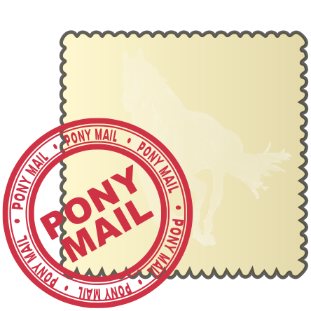

Apache Pony Mail (Incubating) is a web-based mail archive browser licensed under the Apache License v/2.0 and built to scale to millions of archived messages with hundreds of requests per second.
Pony Mail allows you to browse and interact with mailing lists using Mozilla Persona or OAuth2 (Google, GitHub, Facebook etc) for authentication.

See https://lists.apache.org for a demo.
Pony Mail works in both public, private and mixed-mode, allowing you to have one unified place for all your communication, both public and private.
(Optionally see the detailed installation instructions for more information)
For a quick guide to installing Pony Mail, please see the guides for:
Pony Mail has been built for and tested with the mail archives of the Apache Software Foundation, which span more than 15 million emails sent across more than 20 years. To put things into perspective, importing all this on a modern machine (2xSSD with 64GB RAM) took around 12 hours and resulted in a performance at around 100 archive search requests per second per ES node, depending on mailing list size and available bandwidth.
This is a list of what we would love to get done:
We’d LOVE if more people would contribute to Pony Mail! Any form of contribution is most welcome, whether it be programming, documentation, evangelism, marketing, or helping out other users.
To contribute to Pony Mail, follow these steps (also see this doc):
You can check out our canonical source repository at:
https://git-wip-us.apache.org/repos/asf/incubator-ponymail.git
We also have a GitHub mirror at: https://github.com/apache/incubator-ponymail
While we do not have any official Apache releases yet, you may check out previous non-Apache releases on our GitHub repo, at https://github.com/apache/incubator-ponymail. While these are all Apache License v/2-approved, they have not gone through the traditional Apache release process, and as such, are not officially endorsed by the Apache Pony Mail project in any way.
Our primary communication interface is - you guessed it - mailing lists!
We have a number of mailing lists for various purposes:
| Users' list: | users@ponymail.incubator.apache.org | [Subscribe] - [Browse] |
| Development list: | dev@ponymail.incubator.apache.org | [Subscribe] - [Browse] |
| Issues list: | issues@ponymail.incubator.apache.org | [Subscribe] - [Browse] |
| Commit list: | commits@ponymail.incubator.apache.org | [Subscribe] - [Browse] |
We're a small bunch of people committed to making mailing list interaction as easy as possible.
Currently, we consist of (in alphabetical order):
Apache Pony Mail (Incubating) is an effort undergoing incubation at The Apache Software Foundation (ASF), sponsored by the Apache Incubator. Incubation is required of all newly accepted projects until a further review indicates that the infrastructure, communications, and decision making process have stabilized in a manner consistent with other successful ASF projects. While incubation status is not necessarily a reflection of the completeness or stability of the code, it does indicate that the project has yet to be fully endorsed by the ASF.
Copyright 2016, the Apache Software Foundation.
Apache Pony Mail is a trademark of the Apache Software Foundation.
Apache and the Apache feather are registered trademarks of the
Apache Software Foundation.